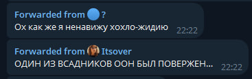
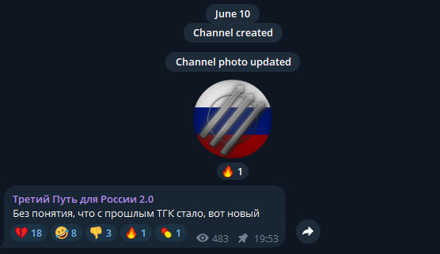

Чат был создан 17 мая 2025 года Чернозёмом и skruider'ом. В чат вступали люди в основном выходцы из
околополит тиктока и базерами. Летом 2025 года был маленький актив и каких-то событий, в то время, не произошло.
Осень 2025 года и война с РДФР

Один из скринов бойни с РДФР. 31 декабря 2025 года
Осенью 2025 года в чат начали заходить новые участники, которые вскоре вошли в историю чата и остаются активными участниками пой сей день. Тогда же в чат зашли FREEDOM_Liberal и базер из Симферополя, которые были админами в РДФР.
Вскоре эти двое начали бесить весь чат своей тупостью и их начали гнобить. 31 декабря 2025 года Фридом в свой канал выложил эдит с ПостРоссией, что стало последней каплей, начавшую войну между Рашн Либерти и РДФР, по итогу которой РДФР понёс большой урон,
а базер из Симферополя ливнул.
Рейд на чат коммунистов(МРФ)
После войны с РДФР, Рашн Либерти проводил рейды на другие чаты, одним из которых был чат "МРФ". МРФ выставляло себя как реальную политическую силу, хотя никаких штабов и хорошей организации не имело. Благодаря этому рейд в РЛ пришли новые участники как Масюня.
Снос Третьего Пути России

Первый пост Третьего Пути России 2.0
Бывший совладелец чата Бенито из-за того, что не мог отстоять свою позицию и несь лютую чушь был забанен голосованием в РЛ, из-за чего между ТПР и РЛ начался конфликт. 10 июня 2026 года из-за наплыва ботов(устроенный Слугашычем) в канал ТПР, которые накидали жалобы на него, чат и канал Бенито был снесён,
но Бенито в кратчайшие сроки создал новый канал и чат.
В настоящий момент
На данный момент в чате остаётся хороший актив, но происходит стагнация. Некоторые старые участники ушли или были забанены. РЛ развивается в творческом плане благодаря созданию новых фотожаб.